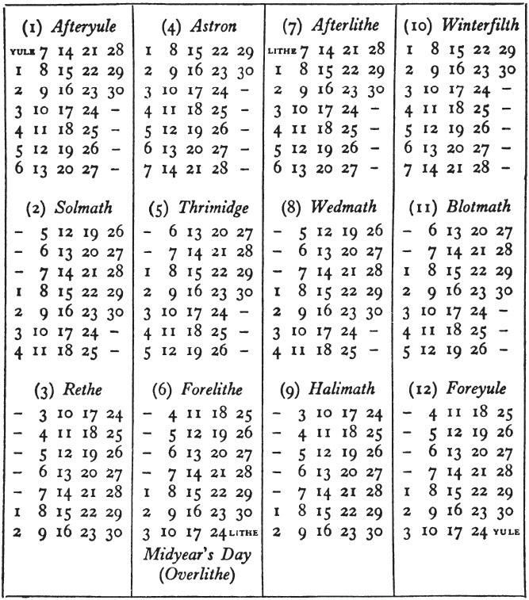

Every year began on the first day of the week, Saturday, and ended on the last day of the week, Friday. The Mid-year’s Day, and in Leap-years the Overlithe, had no weekday name. The Lithe before Mid-year’s Day was called 1 Lithe, and the one after was called 2 Lithe. The Yule at the end of the year was 1 Yule, and that at the beginning was 2 Yule. The Overlithe was a day of special holiday, but it did not occur in any of the years important to the history of the Great Ring. It occurred in 1420, the year of the famous harvest and wonderful summer, and the merrymaking in that year is said to have been the greatest in memory or record.
The Calendar in the Shire differed in several features from ours. The year no doubt was of the same length,1 for long ago as those times are now reckoned in years and lives of men, they were not very remote according to the memory of the Earth. It is recorded by the Hobbits that they had no ‘week’ when they were still a wandering people, and though they had ‘months’, governed more or less by the Moon, their keeping of dates and calculations of time were vague and inaccurate. In the west-lands of Eriador, when they had begun to settle down, they adopted the Kings’ Reckoning of the Dúnedain, which was ultimately of Eldarin origin; but the Hobbits of the Shire introduced several minor alterations. This calendar, or ‘Shire Reckoning’ as it was called, was eventually adopted also in Bree, except for the Shire usage of counting as Year I the year of the colonization of the Shire.
It is often difficult to discover from old tales and traditions precise information about things which people knew well and took for granted in their own day (such as the names of letters, or of the days of the week, or the names and lengths of months). But owing to their general interest in genealogy, and to the interest in ancient history which the learned amongst them developed after the War of the Ring, the Shire-hobbits seem to have concerned themselves a good deal with dates; and they even drew up complicated tables showing the relations of their own system with others. I am not skilled in these matters, and may have made many errors; but at any rate the chronology of the crucial years S.R. 1418, 1419 is so carefully set out in the Red Book that there cannot be much doubt about days and times at that point.
It seems clear that the Eldar in Middle-earth, who had, as Samwise remarked, more time at their disposal, reckoned in long periods, and the Quenya word yén, often translated ‘year’ (p. 377), really means 144 of our years. The Eldar preferred to reckon in sixes and twelves as far as possible. A ‘day’ of the sun they called ré and reckoned from sunset to sunset. The yén contained 52,596 days. For ritual rather than practical purposes the Eldar observed a week or enquië of six days; and the yén contained 8,766 of these enquier, reckoned continuously throughout the period.
In Middle-earth the Eldar also observed a short period or solar year, called a coranar or ‘sun-round’ when considered more or less astronomically, but usually called loa ‘growth’ (especially in the north-western lands) when the seasonal changes in vegetation were primarily considered, as was usual with the Elves generally. The loa was broken up into periods that might be regarded either as long months or short seasons. These no doubt varied in different regions; but the Hobbits only provide information concerning the Calendar of Imladris. In that calendar there were six of these ‘seasons’, of which the Quenya names were tuilë, lairë, yávië, quellë, hrívë, coirë, which may be translated ‘spring, summer, autumn, fading, winter, stirring’. The Sindarin names were ethuil, laer, iavas, firith, rhîw, echuir. ‘Fading’ was also called lasse-lanta ‘leaf-fall’, or in Sindarin narbeleth ‘sun-waning’.
Lairë and hrívë each contained 72 days, and the remainder 54 each. The loa began with yestarë, the day immediately before tuilë, and ended with mettarë, the day immediately after coirë. Between yávië and quellë were inserted three enderi or ‘middle-days’. This provided a year of 365 days which was supplemented by doubling the enderi (adding 3 days) in every twelfth year.
How any resulting inaccuracy was dealt with is uncertain. If the year was then of the same length as now, the yén would have been more than a day too long. That there was an inaccuracy is shown by a note in the Calendars of the Red Book to the effect that in the ‘Reckoning of Rivendell’ the last year of every third yén was shortened by three days: the doubling of the three enderi due in that year was omitted; ‘but that has not happened in our time’. Of the adjustment of any remaining inaccuracy there is no record.
The Númenóreans altered these arrangements. They divided the loa into shorter periods of more regular length; and they adhered to the custom of beginning the year in mid-winter, which had been used by Men of the North-west from whom they were derived in the First Age. Later they also made their week one of 7 days, and they reckoned the day from sunrise (out of the eastern sea) to sunrise.
The Númenórean system, as used in Númenor, and in Arnor and Gondor until the end of the kings, was called Kings’ Reckoning. The normal year had 365 days. It was divided into twelve astar or months, of which ten had 30 days and two had 31. The long astar were those on either side of the Mid-year, approximately our June and July. The first day of the year was called yestarë, the middle day (183rd) was called loëndë, and the last day mettarë; these 3 days belonged to no month. In every fourth year, except the last of a century (haranyë), two enderi or ‘middle-days’ were substituted for the loëndë.
In Númenor calculation started with S.A. 1. The Deficit caused by deducting 1 day from the last year of a century was not adjusted until the last year of a millennium, leaving a millennial deficit of 4 hours, 46 minutes, 40 seconds. This addition was made in Númenor in S.A. 1000, 2000, 3000. After the Downfall in S.A. 3319 the system was maintained by the exiles, but it was much dislocated by the beginning of the Third Age with a new numeration: S.A. 3442 became T.A. 1. By making T.A. 4 a leap year instead of T.A. 3 (S.A. 3444) 1 more short year of only 365 days was intruded causing a deficit of 5 hours, 48 minutes, 46 seconds. The millennial additions were made 441 years late: in T.A. 1000 (S.A. 4441) and 2000 (S.A. 5441). To reduce the errors so caused, and the accumulation of the millennial deficits, Mardil the Steward issued a revised calendar to take effect in T.A. 2060, after a special addition of 2 days to 2059 (S.A. 5500), which concluded 5½ millennia since the beginning of the Númenórean system. But this still left about 8 hours deficit. Hador to 2360 added 1 day though this deficiency had not quite reached that amount. After that no more adjustments were made. (In T.A. 3000 with the threat of imminent war such matters were neglected.) By the end of the Third Age, after 660 more years, the Deficit had not yet amounted to 1 day.
The Revised Calendar introduced by Mardil was called Stewards’ Reckoning and was adopted eventually by most of the users of the Westron language, except the Hobbits. The months were all of 30 days, and 2 days outside the months were introduced: 1 between the third and fourth months (March, April), and 1 between the ninth and tenth (September, October). These 5 days outside the months, yestarë, tuilérë, loëndë, yáviérë, and mettarë, were holidays.
The Hobbits were conservative and continued to use a form of Kings’ Reckoning adapted to fit their own customs. Their months were all equal and had 30 days each; but they had 3 Summerdays, called in the Shire the Lithe or the Lithedays, between June and July. The last day of the year and the first of the next year were called the Yuledays. The Yuledays and the Lithedays remained outside the months, so that January 1 was the second and not the first day of the year. Every fourth year, except in the last year of the century,1 there were four Lithedays. The Lithedays and the Yuledays were the chief holidays and times of feasting. The additional Litheday was added after Mid-year’s Day, and so the 184th day of the Leap-years was called Overlithe and was a day of special merrymaking. In full Yuletide was six days long, including the last three and first three days of each year.
The Shire-folk introduced one small innovation of their own (eventually also adopted in Bree), which they called Shire-reform. They found the shifting of the weekday names in relation to dates from year to year untidy and inconvenient. So in the time of Isengrim II they arranged that the odd day which put the succession out, should have no weekday name. After that Mid-year’s Day (and the Overlithe) was known only by its name and belonged to no week (p. 169). In consequence of this reform the year always began on the First Day of the week and ended on the Last Day; and the same date in any one year had the same weekday name in all other years, so that Shire-folk no longer bothered to put the weekday in their letters or diaries.2 They found this quite convenient at home, but not so convenient if they ever travelled further than Bree.
In the above notes, as in the narrative, I have used our modern names for both months and weekdays, though of course neither the Eldar nor the Dúnedain nor the Hobbits actually did so. Translation of the Westron names seemed to be essential to avoid confusion, while the seasonal implications of our names are more or less the same, at any rate in the Shire. It appears, however, that Mid-year’s Day was intended to correspond as nearly as possible to the summer solstice. In that case the Shire dates were actually in advance of ours by some ten days, and our New Year’s Day corresponded more or less to the Shire January 9.
In the Westron the Quenya names of the months were usually retained as the Latin names are now widely used in alien languages. They were: Narvinyë, Nénimë, Súlimë, Víressë, Lótessë, Nárië, Cermië, Úrimë, Yavannië, Narquelië, Hísimë, Ringarë. The Sindarin names (used only by the Dúnedain) were: Narwain, Nínui, Gwaeron, Gwirith, Lothron, Nórui, Cerveth, Úrui, Ivanneth, Narbeleth, Hithui, Girithron.
In this nomenclature the Hobbits, however, both of the Shire and of Bree, diverged from the Westron usage, and adhered to old-fashioned local names of their own, which they seem to have picked up in antiquity from the Men of the vales of Anduin; at any rate similar names were found in Dale and Rohan (cf. the notes on the languages, pp. 1130, 1135-6). The meanings of these names, devised by Men, had as a rule long been forgotten by the Hobbits, even in cases where they had originally known what their significance was; and the forms of the names were much obscured in consequence: math, for instance, at the end of some of them is a reduction of month.
The Shire names are set out in the Calendar. It may be noted that Solmath was usually pronounced, and sometimes written, Somath; Thrimidge was often written Thrimich (archaically Thrimilch); and Blotmath was pronounced Blodmath or Blommath. In Bree the names differed, being Frery, Solmath, Rethe, Chithing, Thrimidge, Lithe, The Summerdays, Mede, Wedmath, Harvestmath, Wintring, Blooting, and Yulemath. Frery, Chithing and Yulemath were also used in the Eastfarthing.1
The Hobbit week was taken from the Dúnedain, and the names were translations of those given to the days in the old North-kingdom, which in their turn were derived from the Eldar. The six-day week of the Eldar had days dedicated to, or named after, the Stars, the Sun, the Moon, the Two Trees, the Heavens, and the Valar or Powers, in that order, the last day being the chief day of the week. Their names in Quenya were Elenya, Anarya, Isilya, Aldúya, Menelya, Valanya (or Tárion); the Sindarin names were Orgilion, Oranor, Orithil, Orgaladhad, Ormenel, Orbelain (or Rodyn).
The Númenóreans retained the dedications and order, but altered the fourth day to Aldëa (Orgaladh) with reference to the White Tree only, of which Nimloth that grew in the King’s Court in Númenor was believed to be a descendant. Also desiring a seventh day, and being great mariners, they inserted a ‘Sea-day’, Eärenya (Oraearon), after the Heavens’ Day.
The Hobbits took over this arrangement, but the meanings of their translated names were soon forgotten, or no longer attended to, and the forms were much reduced, especially in everyday pronunciation. The first translation of the Númenórean names was probably made two thousand years or more before the end of the Third Age, when the week of the Dúnedain (the feature of their reckoning earliest adopted by alien peoples) was taken up by Men in the North. As with their names of months, the Hobbits adhered to these translations, although elsewhere in the Westron area the Quenya names were used.
Not many ancient documents were preserved in the Shire. At the end of the Third Age far the most notable survival was Yellowskin, or the Yearbook of Tuckborough.1 Its earliest entries seem to have begun at least nine hundred years before Frodo’s time; and many are cited in the Red Book annals and genealogies. In these the weekday names appear in archaic forms, of which the following are the oldest: (1) Sterrendei, (2) Sunnendei, (3) Monendei, (4) Trewesdei, (5) Hevenesdei, (6) Meresdei, (7) Hihdei. In the language of the time of the War of the Ring these had become Sterday, Sunday, Monday, Trewsday, Hevensday (or Hensday), Mersday, Highday.
I have translated these names also into our own names, naturally beginning with Sunday and Monday, which occur in the Shire week with the same names as ours, and re-naming the others in order. It must be noted, however, that the associations of the names were quite different in the Shire. The last day of the week, Friday (Highday), was the chief day, and one of holiday (after noon) and evening feasts. Saturday thus corresponds more nearly to our Monday, and Thursday to our Saturday.2
A few other names may be mentioned that have a reference to time, though not used in precise reckonings. The seasons usually named were tuilë spring, lairë summer, yávië autumn (or harvest), hrívë winter; but these had no exact definitions, and quellë (or lasselanta) was also used for the latter part of autumn and the beginning of winter.
The Eldar paid special attention to the ‘twilight’ (in the northerly regions), chiefly as the times of star-fading and star-opening. They had many names for these periods, of which the most usual were tindómë and undómë; the former most often referred to the time near dawn, and undómë to the evening. The Sindarin name was uial, which could be defined as minuial and aduial. These were often called in the Shire morrowdim and evendim. Cf. Lake Evendim as a translation of Nenuial.
The Shire Reckoning and dates are the only ones of importance for the narrative of the War of the Ring. All the days, months, and dates are in the Red Book translated into Shire terms, or equated with them in notes. The months and days, therefore, throughout The Lord of the Rings refer to the Shire Calendar. The only points in which the differences between this and our calendar are important to the story at the crucial period, the end of 3018 and the beginning of 3019 (S.R. 1418, 1419), are these: October 1418 has only 30 days, January 1 is the second day of 1419, and February has 30 days; so that March 25, the date of the downfall of the Barad-dûr, would correspond to our March 27, if our years began at the same seasonal point. The date was, however, March 25 in both Kings’ and Stewards’ Reckoning.
The New Reckoning was begun in the restored Kingdom in T.A. 3019. It represented a return to Kings’ Reckoning adapted to fit a spring-beginning as in the Eldarin loa.1
In the New Reckoning the year began on March 25 old style, in commemoration of the fall of Sauron and the deeds of the Ring-bearers. The months retained their former names, beginning now with Víressë (April), but referred to periods beginning generally five days earlier than previously. All the months had 30 days. There were 3 Enderi or Middle-days (of which the second was called Loëndë), between Yavannië (September) and Narquelië (October), that corresponded with September 23, 24, 25 old style. But in honour of Frodo Yavannië 30, which corresponded with former September 22, his birthday, was made a festival, and the leap-year was provided for by doubling this feast, called Cormarë or Ringday.
The Fourth Age was held to have begun with the departure of Master Elrond, which took place in September 3021; but for purposes of record in the Kingdom Fourth Age 1 was the year that began according to the New Reckoning in March 25, 3021, old style.
This reckoning was in the course of the reign of King Elessar adopted in all his lands except the Shire, where the old calendar was retained and Shire Reckoning was continued. Fourth Age 1 was thus called 1422; and in so far as the Hobbits took any account of the change of Age, they maintained that it began with 2 Yule 1422, and not in the previous March.
There is no record of the Shire-folk commemorating either March 25 or September 22; but in the Westfarthing, especially in the country round Hobbiton Hill, there grew up a custom of making holiday and dancing in the Party Field, when weather permitted, on April 6. Some said that it was old Sam Gardner’s birthday, some that it was the day on which the Golden Tree first flowered in 1420, and some that it was the Elves’ New Year. In the Buckland the Horn of the Mark was blown at sundown every November 2 and bonfires and feastings followed.2